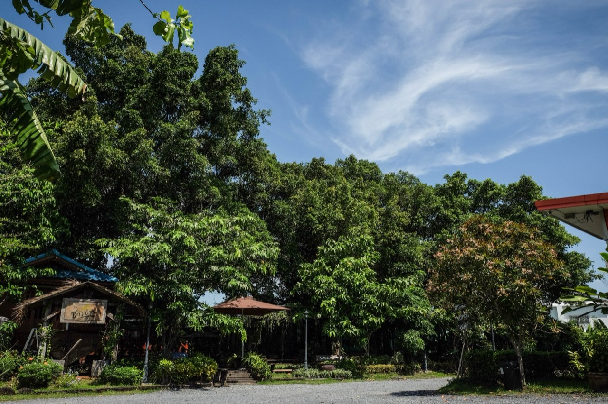

พาน้องหมาน้องแมวเที่ยว: โรงแรม Pet Friendly ย่านปากเกร็ด–เมืองทอง

สำหรับคนรักสัตว์ การไปเที่ยวหรือทำธุระทั้งทีแต่ต้องทิ้งน้องไว้เฝ้าบ้านคือเรื่องที่ตัดใจยากที่สุด ข่าวดีคือย่าน ปากเกร็ด–เมืองทองธานี มีที่พักแบบ Pet Friendly ที่พาน้องหมาน้องแมวมาพักด้วยกันได้ ไม่ต้องกังวลเรื่องฝากเลี้ยง
เตรียมตัวก่อนพาสัตว์เลี้ยงไปพักโรงแรม
- เช็คเงื่อนไขล่วงหน้า — รับสัตว์เลี้ยงประเภทไหน น้ำหนักเท่าไหร่ มีค่าใช้จ่ายเพิ่มไหม
- เตรียมของใช้ของน้อง — ที่นอน ชามอาหาร ของเล่น และถุงเก็บของเสีย
- พาน้องออกกำลังก่อนเข้าห้อง — ให้น้องได้วิ่งเล่นคลายเครียด จะได้พักผ่อนง่ายขึ้น
- อาบน้ำ/เช็ดตัวให้เรียบร้อย — เพื่อความสะอาดและถนอมห้องพัก
เลือกโรงแรม Pet Friendly แบบไหนให้น้องมีความสุข
จุดสำคัญคือ พื้นที่สีเขียวให้น้องวิ่งเล่น, ห้องที่สะอาดไม่มีกลิ่นอับ และทีมงานที่เข้าใจและเป็นมิตรกับสัตว์เลี้ยง บรรยากาศแบบบ้านสวนจะช่วยให้ทั้งคนและน้องผ่อนคลายได้มากกว่าห้องในตึกสูงแคบๆ
ที่ โรงแรมบ้านเพิ่มสุข เรามีห้อง Pet Friendly โดยเฉพาะ สวนกว้างร่มรื่นให้น้องวิ่งเล่น ใกล้อิมแพ็ค เมืองทองเพียง 7-10 นาที ห้องสะอาด ทีมงานยินดีต้อนรับทั้งสี่ขาและสองขา มีค่าใช้จ่ายดูแลเพิ่มเติมเพียง 300 บาทต่อน้องหนึ่งตัว
สอบถามห้อง Pet Friendly และเงื่อนไขการพาสัตว์เลี้ยงเข้าพักได้เลย
สอบถาม & จองผ่าน LINE